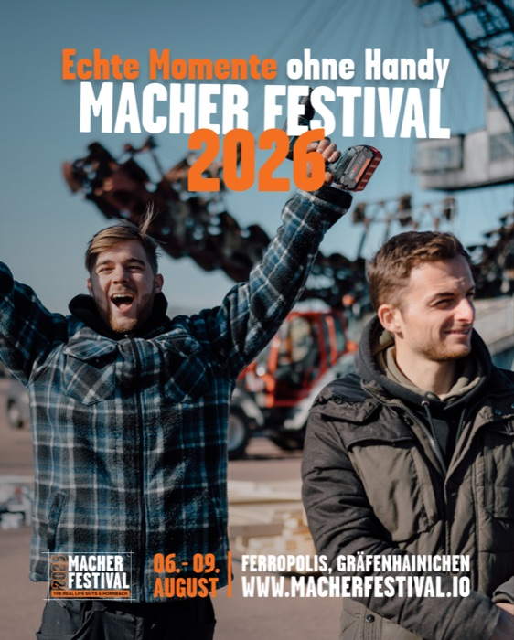
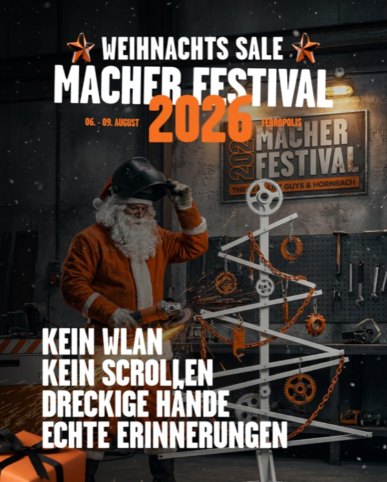
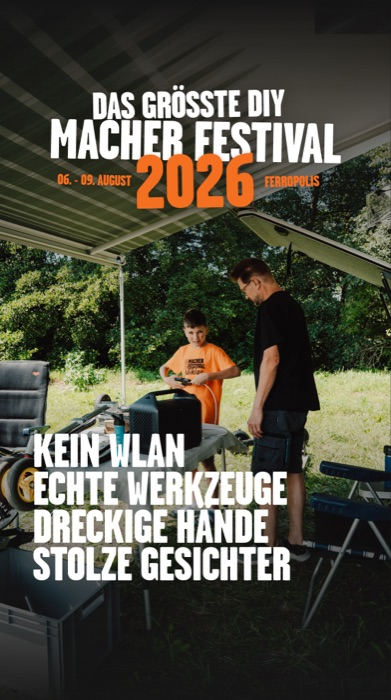
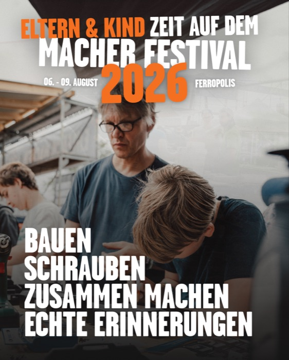

| Konzept | Format | Angle | Psychologischer Hebel | Zielgruppe |
|---|---|---|---|---|
| 01 Werkstatt | Video | Value / Gratis | „Unglaublich!"-Staun-Hook + kostenlose Ressourcen | Preisbewusste DIY-Interessierte |
| 02 Schweißen | Video | Skill-Direktversprechen | Frage → sofortige Zusage („Kriegst du.") | Skill-Suchende, Kernzielgruppe |
| 03 Heli | Video | Action-Listicle | Erlebnis-Stacking (Heli, Bagger, Seifenkisten) | Breite Erlebnis-Zielgruppe |
| 04 Fahrschule | Video | Kuriosität / Pattern-Interrupt | „Die verrückteste Fahrschule Deutschlands" | Scroll-Stopper für alle |
| 05/06 RLG-Handy | Static ×2 | Digital Detox | Schmerzpunkt Handysucht → „4 Tage offline" | Junge Erwachsene, Selbstoptimierer |
| 07/08 RLG-Autark | Static ×2 | Creator-Community | Ich-Form der Real Life Guys („meine Autark-Serie") | RLG-Fanbase (warm) |
| 09/10 RLG-Family | Static ×2 | Teen→Eltern-Umweg | Spricht Jugendliche an, die die Eltern überzeugen | Teens 13–18 als Multiplikator |
Das rationale Fundament der Kampagne: „gratis" ist im DACH-Markt einer der stärksten Trigger, und die Bullets machen den Wert konkret. Schwäche: Der „Unglaublich!"-Einstieg ist generisches Werbedeutsch — der schwächste Hook im Set. Achtung außerdem: „über 1000 m²" widerspricht den 10.000 qm der Website — sollte vereinheitlicht werden.
Starkes Argument, schwacher Hook. Value-Botschaft behalten, Einstieg neu schreiben.
„Du willst schweißen lernen? Kriegst du." ist die beste Copy-Zeile der ganzen Kampagne — Frage-Hook plus sofortige, selbstbewusste Zusage in zwei Wörtern. Dazu der soziale CTA „Schnapp dir deine Leute", der aus dem Einzelkauf einen Gruppenkauf macht (höherer Warenkorb).
Copy-Benchmark der Kampagne. Das „Willst du X? Kriegst du."-Muster ist beliebig auf andere Workshops übertragbar.
Erlebnis-Stacking mit dem spektakulärsten Element (Heli) als Anker — klassisches Breiten-Prospecting. „4.000 Reifen" gibt der Behauptung Substanz. „Für jeden ist was dabei" ist dagegen eine Floskel, die niemanden meint; die Zeile kostet mehr, als sie bringt.
Solider Reichweiten-Angle. Der Heli ist das teuerste visuelle Asset des Festivals — gehört prominent in jede Awareness-Welle.
Bester Pattern-Interrupt des Sets: „Fahrschule" ist ein Wort, das niemand in einer Festival-Ad erwartet, und „ohne dein eigenes Auto zu schrotten" liefert den Benefit mit einem Grinsen. Genau die Sorte Hook, die in Reels funktioniert, weil sie wie Content klingt statt wie Werbung.
Vorlage für eine ganze Kuriositäten-Serie — jedes ungewöhnliche Festival-Element kann so einen Hook tragen.


Trifft den wunden Punkt der Zielgruppe genau dort, wo sie ihn spürt: beim Scrollen. „4 Tage offline" als Headline ist mutig und differenzierend — ein Festival, das mit Abwesenheit von Technik wirbt. Die Creatives („Kein WLAN. Kein Scrollen. Dreckige Hände. Echte Erinnerungen.") sind die stärksten Statements der Bildsprache.
Der Identitäts-Kern der Marke. Wurde in der neuen 90%-Kampagne bereits als „Dreckige Hände"-Angle weitergeführt.

Die einzige Ad in Ich-Form der Real Life Guys — und damit das wertvollste Copy-Asset der Kampagne. „Du hast meine Autark-Serie verfolgt" qualifiziert die Fanbase in einem Halbsatz und macht aus einer Anzeige eine persönliche Einladung. Creator-Voice umgeht Werbe-Skepsis wie kein anderes Format.
Unfairer Vorteil des Festivals. Die RLG-Reichweite ist ein Asset, das Wettbewerber nicht kaufen können — mehr davon.

Der cleverste Targeting-Kniff der Kampagne: Die Ad spricht nicht die zahlenden Eltern an, sondern die Teenager als Fürsprecher („Dann zeig ihnen das hier"). Der Share-CTA ist hier kein Test, sondern der eigentliche Mechanismus — Kinder teilen die Ad in den Familienchat. Eigene Landingpage (/eltern-und-kind) schließt den Kreis.
Konzeptionell die smarteste Ad im Set. Der Familien-Funnel verdient eine eigene Creative-Serie.
Diese Prospecting-Welle hat die Angles etabliert — die am 22.07. gestartete Nachfolge-Kampagne legt die fehlende Scarcity-Klammer („zu 90% ausverkauft") über die bewährten Motive. Detail-Analyse der sechs neuen Ads im Companion-Report: 90% Ausverkauft — Der Angle-Report.